Plantillas de formato en
plantillas/. Diagnóstico del sitio hoy en data/.
Láminas listas para Canva en laminas/. Textos propios MKOF (no se copian de otros clientes).
5sitios auditados
—pasan Core Web Vitals (móvil)
1Indisa: se ve bien / no sirve
Ley 21.719oportunidad vs. competencia
Láminas Canva — WEB
Abrí cada lámina → clic derecho → «Guardar imagen» o screenshot.
Copy: laminas/COPY-CANVA.txt
· JSON: data/textos-laminas.json
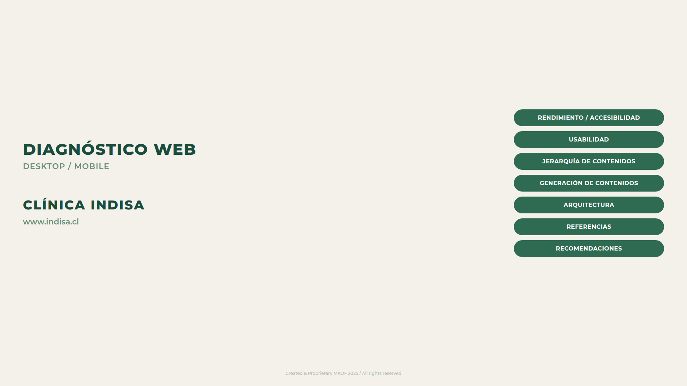
01 · Portada Diagnóstico WEB UX/UI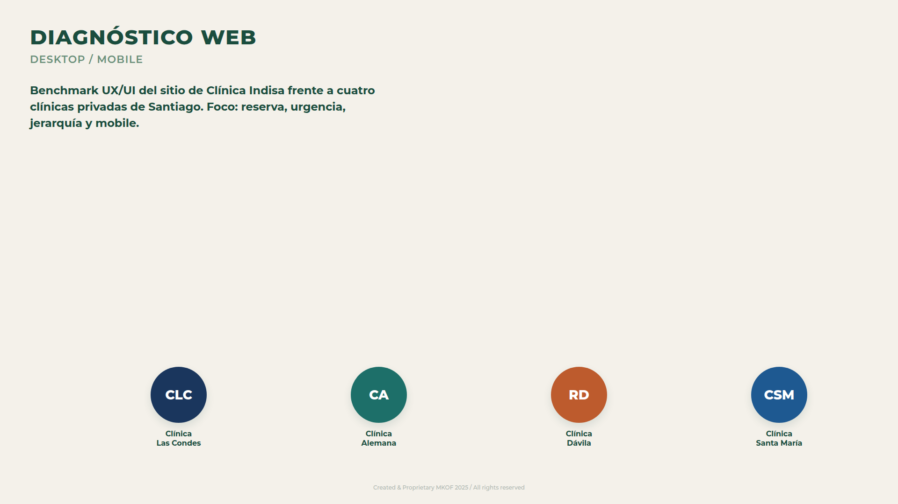
02 · Competencia Quiénes entran al banco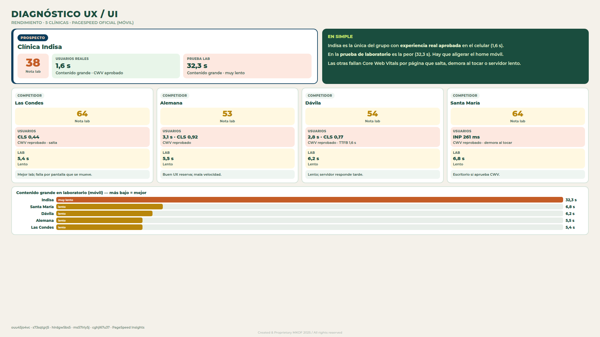
03 · Rendimiento 5 clínicas · PageSpeed oficiales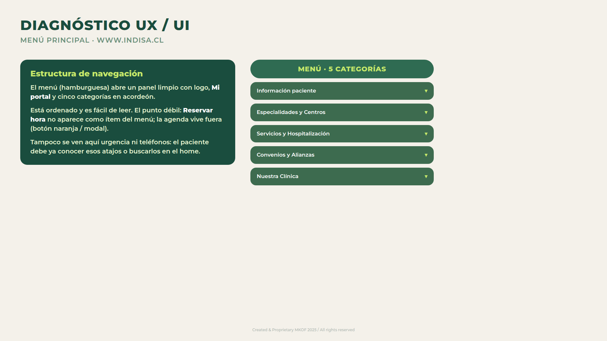
04 · Menú principal 5 categorías en acordeón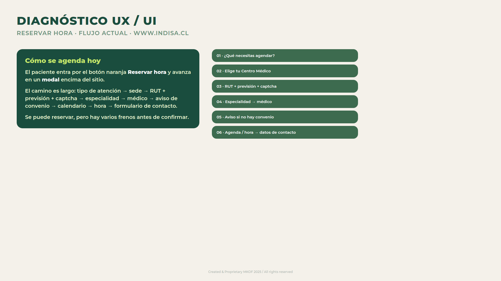
04b · Reservar hora Flujo actual del modal de agenda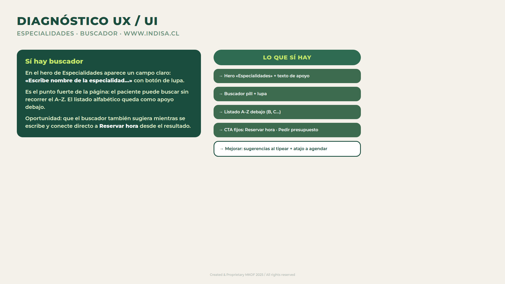
04c · Especialidades Buscador en hero + listado A–Z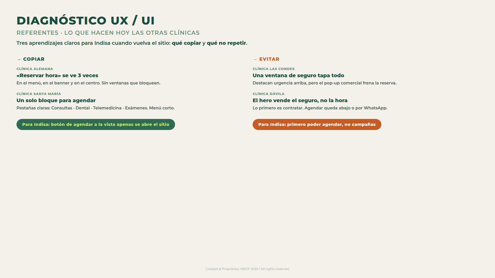
05 · Referentes Qué copiar / qué evitar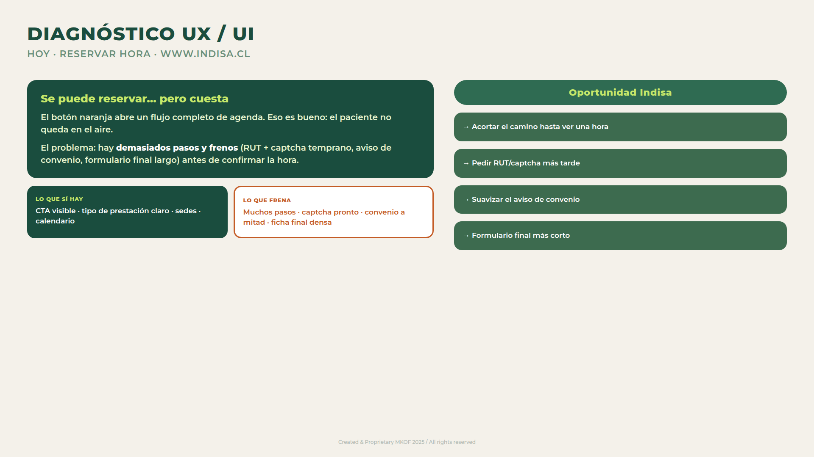
06 · Se puede / cuesta Reserva con fricción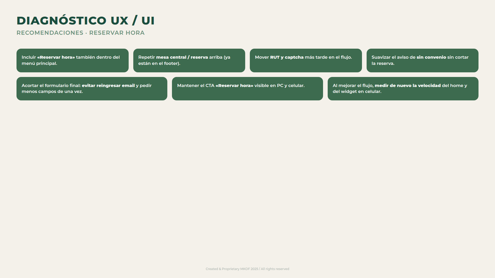
07 · Recomendaciones Reservar hora (resumen)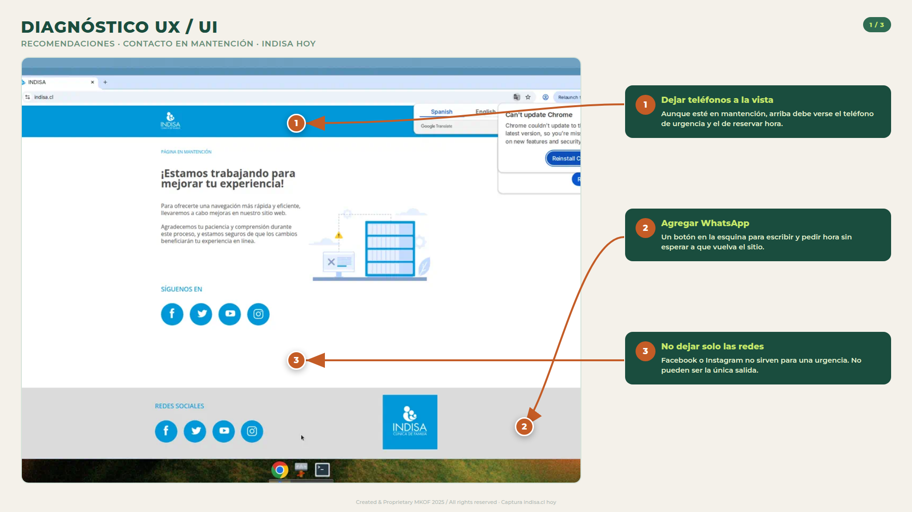
07a · Inicio del flujo CTA · tipo · sede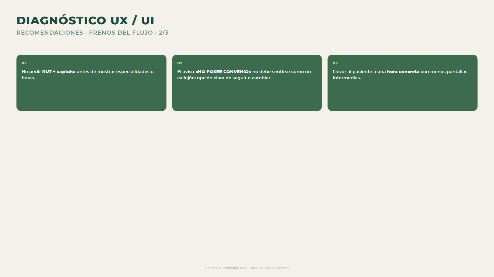
07b · Frenos RUT · captcha · convenio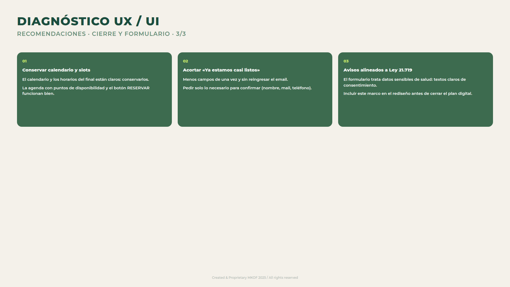
07c · Cierre Agenda · formulario · Ley 21.719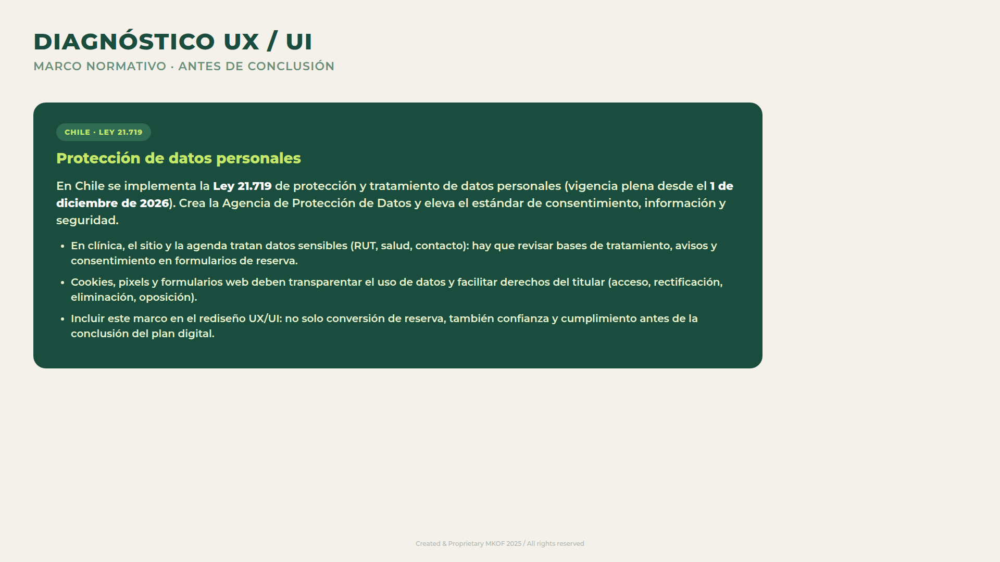
08 · Ley 21.719 Ventana vs. competencia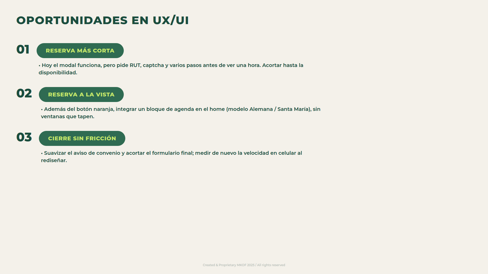
09 · Oportunidades Por qué contratar